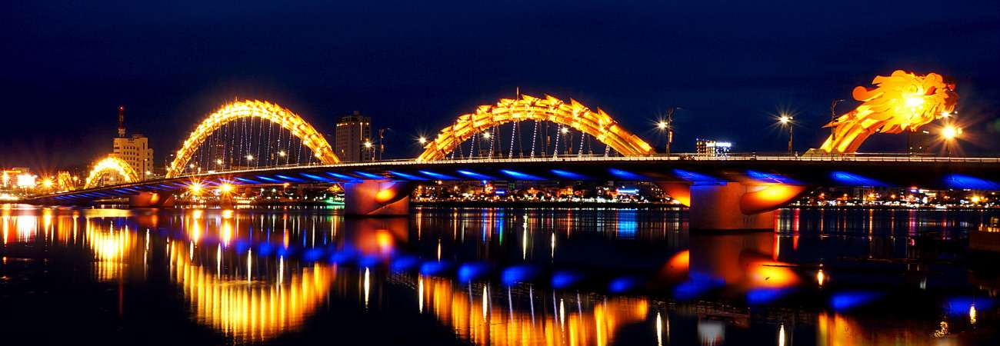
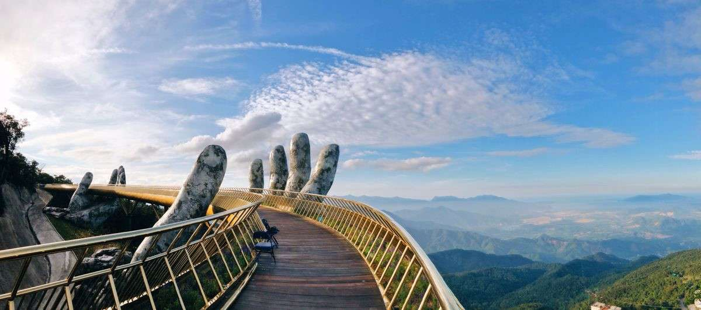
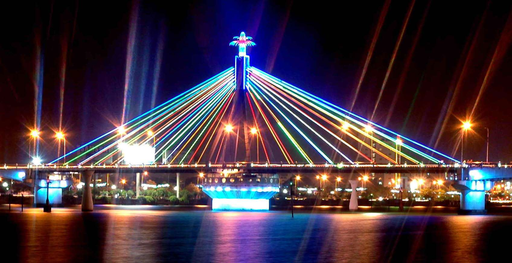
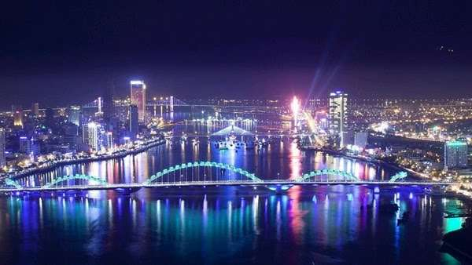

1. Dragon Bridge
The Dragon Bridge (Vietnamese: Cầu Rồng) is a bridge over the River Hàn at Da Nang(click here for more information..), Vietnam.
Construction of the bridge began on 19 July 2009 (the same day as the inauguration of the nearby Thuận Phước Bridge)
when the former Prime Minister of Vietnam Nguyen Tan Dung and many high-ranking government officials attended the groundbreaking
ceremony.

Dragon Bridge is 666m long, 37.5m wide and has six lanes for traffic. It opened to traffic on March 29, 2013, at a cost of
nearly VND 1.5 trillion dong (US$88m).The bridge was designed by the US-based Ammann & Whitney Consulting Engineers with
Louis Berger Group. Construction was undertaken by Company No. 508, an affiliate of Civil Construction Engineering Corporation
No.5, and Bridge Company No. 75. Main span was completed on October 26, 2012. The bridge was opened to traffic on March 29,
2013, the 38th anniversary of the liberation of Da Nang City.
This modern bridge crosses the Han River at the Le Dinh Duong/Bach Dang traffic circle, providing the shortest road
link from the Da Nang International Airport to other main roads in Da Nang city, and a more direct route to My Khe Beach
and Non Nuoc Beach on the eastern edge of the city. The bridge was designed and built in the shape of a dragon and to breathe
fire and water each Saturday and Sunday night at 9 pm.
1.Gold Bridge, Ba Na Hills
The Golden Bridge (Vietnamese: Cầu Vàng) is a 150-metre-long (490 ft) pedestrian bridge in the Bà Nà Hills resort,
near Da Nang, Vietnam. It is designed to connect the cable car station with the gardens (avoiding a steep incline)
and to provide a scenic overlook and tourist attraction. The bridge loops nearly back around to itself, and has two giant hands,
constructed of fibreglass and wire mesh, designed to appear like stone hands that support the structure.

The client for the project was the Sun Group. The bridge was designed by TA Landscape Architecture (under Ho Chi Minh
City University of Architecture) based in Ho Chi Minh City. The company's founder, Vu Viet Anh, was the project's principal
designer, with Tran Quang Hung as the bridge designer and Nguyen Quang Huu Tuan as the bridge's design manager. Construction
began in July 2017 and was completed in April 2018. The bridge opened in June 2018
3. Han River
The Hàn River (Sông Hàn, or Hàn giang) is a river located in the South Central Coast region of Vietnam. It originates in Quảng Nam Province and empties into the South China Sea at Da Nang.

Shortly after the bridge was completed, the contractor, Phạm Minh Thông, was arrested. He was charged and jailed for stealing money from the project and for bribery, but the men who took the bribes were never revealed.
According to Radio Free Asia, the People's Procuracy of Da Nang City concluded in the Document No. 73/KSDT-KT (October, 2000)
and Document No. 77/KSDT/KT (November 2000) sent to the Supreme People's Procuracy of Vietnam and Phan Diễn (then-Secretary of
Communist Party Committee of Danang) that Nguyễn Bá Thanh received bribes from Phạm Minh Thông (4.4 billion VND in total) in
the construction projects of Hàn River Bridge and North-South Street in Danang. However, the case was eventually dropped.
Vietnamese mass media (which, according to Human Rights Watch and Reporters Without Borders, are all strictly controlled by the
government) were censored and even praised Thanh for his "many contributions" in the development of Da Nang City
